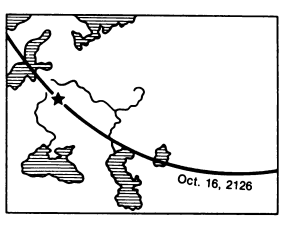
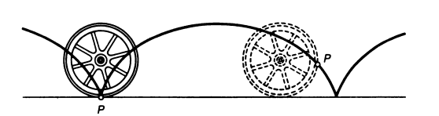
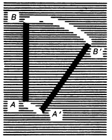
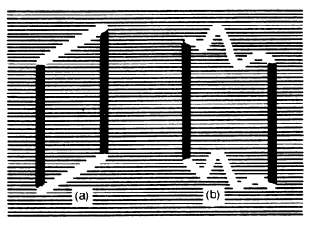
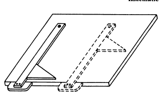

To describe the motion of a body, we must indicate how the positions of its points change with time. During the motion, each point of the bodydescribes a certain line, viz. the trajectory o f motion. Moving a piece of chalk over a blackboard, we leave a track on it, viz. the trajectory of mo tion of the edge of the chalk. A writing is the trajectory of the tip of a pen. The luminous track of a meteor in the night sky (see Fig. 1) and the cloudy tracks of alpha-particles (see Fig. 2) are the trajectories of the meteor and alpha-particles. Astronomers expecting a solar eclipse calculate the trajec tory of motion of the Moon’s shadow over the surface of the Earth beforehand. Figure 4 shows such a trajectory for the nearest total solar eclipse.
Fig. 4: The trajectory of the centre of the M oon’s shadow during the forthcoming solar eclipse of October 16, 2126.
TSince the motion is relative, the trajectory o f motion may depend on the choice o f the reference system. For instance, in the absence of wind, to an observer in a carriage at rest the rain drops seem to fall vertically: rain drops leave behind vertical tracks on the window glass. If, however, the train starts off, the rain drops seem to fall obliquely with respect to the moving carriage: rain drops leave behind inclined tracks on the window, their slope being the larger, the higher the velocity of the train. Figure 5 shows the trajectory of point P on the rim of a wheel relative to the surface of the Earth (the wheel is rolling over a straight road). Naturally, the tra jectory of point P relative to the cart is the rim circumference itself.
Fig. 5: Point P on the rim of a rolling wheel describes a cycloid trajectory relative to the surface of the Earth.
The trajectories of different points of a body may be different. This can be visually demonstrated by rapidly moving, for example, a splinter smouldering at two ends in a dark room. The human eye has the property of persistence of vision for about 0.1 s. Therefore, we perceive the trajec tories of the smouldering ends of the splinter as luminous lines and can compare the two trajectories (Fig. 6).
The simplest motion of a body is such that all its points move similarly, describing identical trajectories. This type of motion is known as translatory motion. We can observe a translatory motion by displacing the splinter so that it always remains parallel to itself. The trajectories in a translatory motion can be either straight lines (Fig. la) or curves (Fig. lb). It can be proved that in translatory motion any straight line drawn in a body remains parallel to itself. This typical feature is convenient to use when one has to determine whether or not a given motion is translatory. In a rolling cylinder, for example, straight lines crossing its axis do not remain parallel to themselves since rolling is not a translatory motion. When a T-square and a triangle move over a drawing board, any straight line drawn in them remains parallel to itself, and, hence, their motion is translatory (Fig. 8). A needle in a sewing machine, a piston in the cylinder of a steam engine or internal combustion engine, the hood of a motor car (but not its wheels!) moving on a straight road are examples of bodies in translatory motion.
Fig. 6: The trajectories A A ' and B B ' of the smouldering ends of a splinter are different.
Another simple type of motion is rotary motion, or rotation. In rotary motion, all points of the body move in circles whose centres lie on a straight line. This line is called the rotation axis (straight line OO' inFig. 9). The circles lie in parallel planes that are perpendicular to the rota tion axis. The points lying on the rotation axis remain at rest. Rotation is not a translatory motion since only straight lines that are parallel to the rotation axis remain parallel to themselves in this motion (like the straight line BC in Fig. 9). The diurnal motion of the Earth is a rotary motion. The oscillations of the pendulum of a clock is also an example of rotation. Rotation is fre quently encountered in engineering: wheels, pulleys, shafts and axles of various mechanisms, crankshafts, air screws, pointers of measuring in struments, etc. execute rotary motions.
Fig. 7: Translatory motion of a splinter.
Fig. 8: A T-square and a triangle are in translatory motion relative to the surface of a drawing board.
Fig. 9. The circles lie in parallel planes that are perpendicular to the rota tion axis. The points lying on the rotation axis remain at rest. Rotation is not a translatory motion since only straight lines that are parallel to the rotation axis remain parallel to themselves in this motion (like the straight line BC in Fig. 9). The diurnal motion of the Earth is a rotary motion. The oscillations of the pendulum of a clock is also an example of rotation. Rotation is fre quently encountered in engineering: wheels, pulleys, shafts and axles of various mechanisms, crankshafts, air screws, pointers of measuring in struments, etc. execute rotary motions.